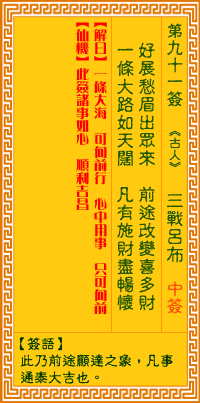

观音灵签第九十一签 【三战吕布】 |
 | |||
好把悉眉须展开 大才大用荐将来 一条大路平如掌 凡有施为总称怀 |
||||
| 【吉凶】 | 上上签 | 【宫位】 | 酉宫 | |
| 【签语】 | 此卦前途显运之象，凡事通泰大吉也。 | |||
| 【解曰】 | 一条大路 可向前行 心中用事 只可向前 | |||
| 【仙机】 | 此签家宅诸事如心，顺利吉昌。 | |||
| 【详解】 | 请将深锁的眉头舒展开来吧，未来必有举荐大用;前方宽广的大道平坦地好似摊开的手掌，一切只要付诸实行，总能称心如意! 一条大路，尽可施为，心中用事，只宜向前。此签前程有路之象，凡事施为则吉。 本签为前程有坦途可行之象。凡事谋之行之立见吉利者也。一条坦途可向前行。心中用事不必瞻前顾后。勇往迈进事事可如意。顺利吉昌者。唯行在顶峰。傲视下 界之际。勿忘今日之所由生。皆由贵人扶之者。易言之。必留个余地。以防向下坡之崎岖。 此签有”万全准备”之意。提醒当事人，凡事勿拖泥带水。在人生中，我们三不五时会面临许多新的机会或重大的决定，尤其是情况有急迫性、时效性时，人往往 会对之后不可预知的结果而产生犹豫、或变得不知如何是好。此时切记沉着冷静，慎重考虑目前的环境与情势，分析出有利自己的优缺点，然后做出正确的决定。 如果拖泥带水、迟疑不决，可能导致错失良机。平时就要做好准备，免得突发状况时手忙脚乱。 | |||
| 【典故】 | 吕布英勇无比，认董卓为父。董卓令吕布领三万大军，扎住于虎牢关，准备迎战曹操和刘备军队。吕布领兵迎战。首先是张飞和吕布酣战 ，不分胜败，关公见了，随即加入，左右夹攻，刘备也从旁边加入助战，三人厮杀在一块，不分胜负。吕布见不能胜，飞马往关上逃，刘关张三人直追，此为著名的‘三英战吕布 ’。吕布后来归顺曹操，又在白门楼被曹操杀死 | |||